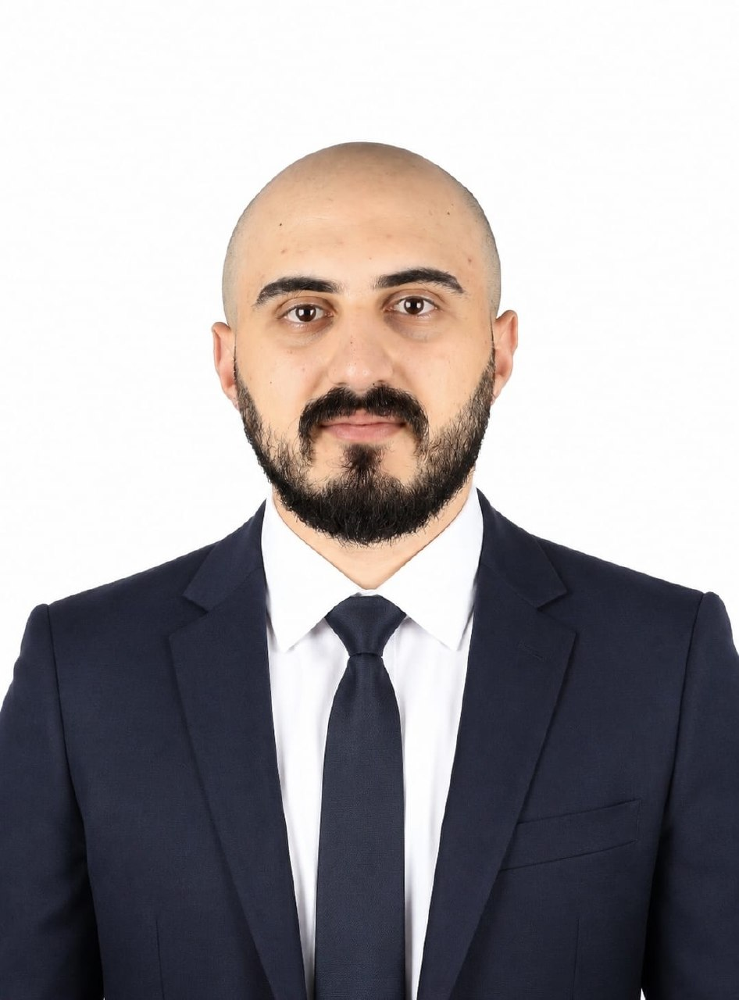

I focus on network defense, security monitoring and practical cybersecurity engineering — turning technical knowledge into usable security solutions.

YOURNetwork and Information Security Engineering graduate from Al-Hussein Bin Talal University. My practical focus includes network security and architecture, SOC monitoring, traffic analysis, firewall design and implementation, vulnerability assessment, basic penetration testing and Linux administration. I am bilingual in Arabic and English and seeking an entry-level SOC Analyst, Network Security or Cybersecurity Engineering role.
Traffic visibility · network protection · monitoring · assessment
Architecture · TCP/IP · VLANs
Traffic analysis · monitoring
SQLi · XSS · basic testing
Proxy filtering · packet monitoring
Packet capture · traffic analysis
Network discovery · assessment
Security testing environment
Security monitoring · analysis
Applied programming
Programming fundamentals
Linux systems administration
Analytical thinking · problem solving
Excellent academic performance.
Hands-on cybersecurity training.
Focused cybersecurity training.